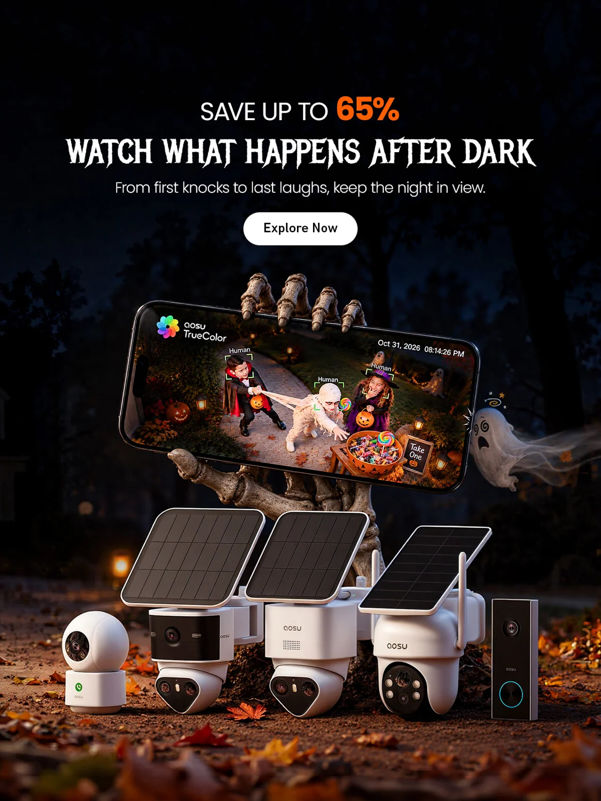
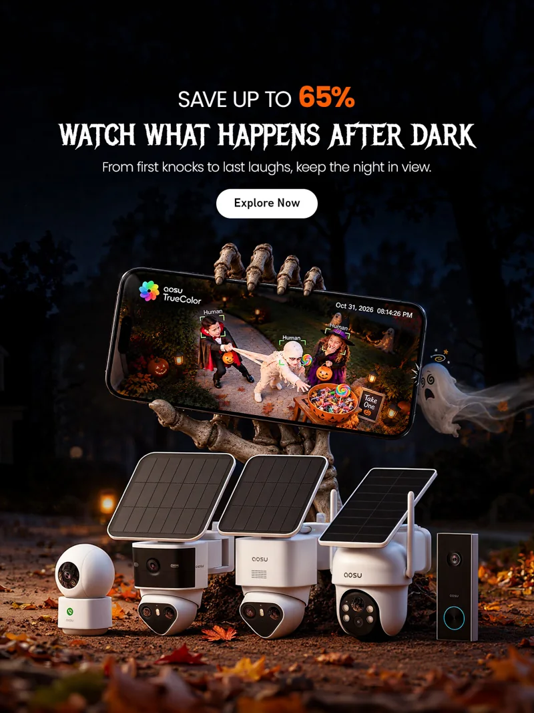
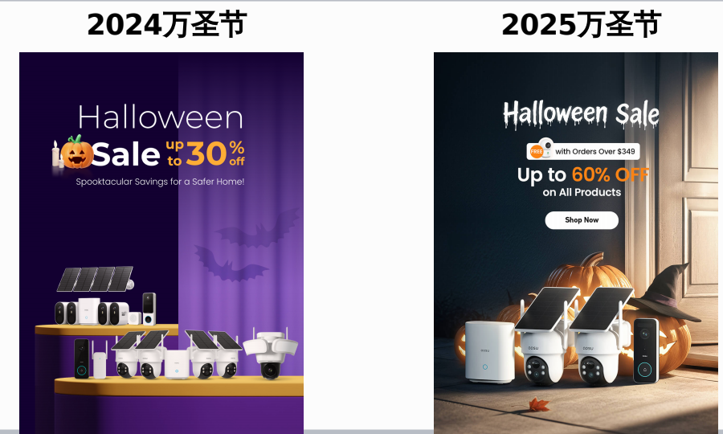
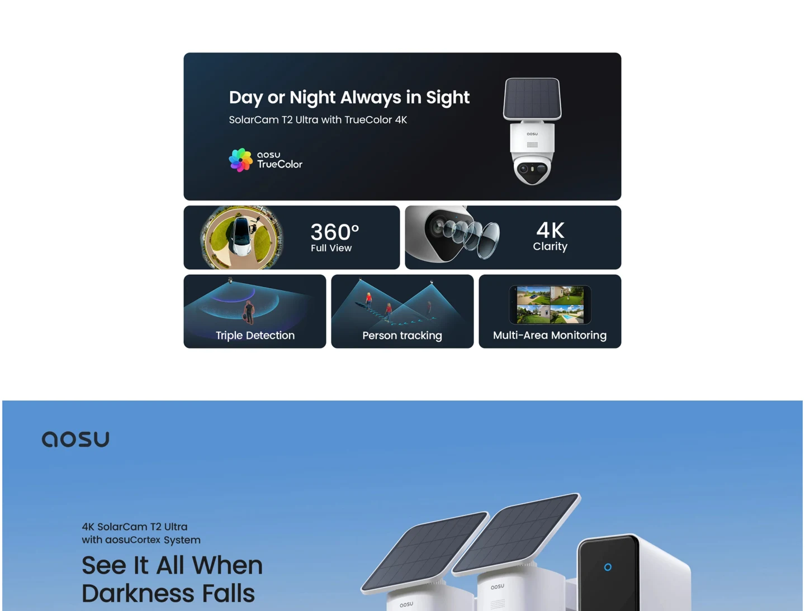
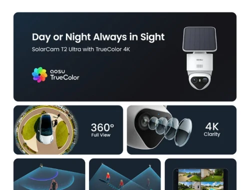

可靠
家中发生的事，通过手机可以随时了解。

从品牌使命出发，将全彩夜视的产品能力，转化为美国家庭熟悉的万圣夜场景。

THE STARTING POINT
以 aosu 的品牌理念为起点，画面希望传递的不只有夜视功能，还有人们对家庭生活的关心。
在美国，孩子们会穿着万圣节服装，挨家挨户讨糖。许多家庭会在前院设置糖果区，供邻家的孩子取用。
这为创意提供了具体场景：当主人不在门口时，仍可以通过手机，看见家门前发生的有趣瞬间。
家中发生的事，通过手机可以随时了解。
以全彩夜视画面，直观表达夜间细节的可见性。
从美国家庭熟悉的生活场景切入，建立情感联系。

A SMALL STORY, A CLEAR MESSAGE
三个邻家孩子来到糖果区。穿木乃伊服装的孩子拿起一个大棒棒糖，正想再拿一个时，身后的“吸血鬼”拦住了他——牌子上写着“只能拿一颗”。一旁的小女孩开心地笑了。
以手机作为观看入口，将孩子们的互动与全彩夜视画面放在同一视觉中心，让观者直观理解：摄像头记录下了万圣夜的家庭生活。
画面为营销创意场景，用于表达产品与品牌价值。
以下是本案例的传播设计逻辑，不代表已经验证的转化结果。
用万圣夜场景与清晰主题吸引目标用户。
官网主视觉延续广告的故事、色彩与产品组合。
通过手机中的夜视画面，连接产品功能与家庭生活。
促销信息与行动按钮引导用户探索产品。


同样的万圣节主题，从产品陈列到门前场景。并列观察视觉语言与信息表达的变化。

从抽象展台，走向与家庭安防相关的门前环境。
从紫色节日符号，转向夜色、暖光与材质细节。
从密集的产品阵列，转向更集中的产品组合。
以上为画面层面的对比观察；具体调整背景与决策过程，后续结合项目资料补充。本组为 2024—2025 对比，与上方 2026 案例分别呈现。
aosu C9X 独立站售卖页
PC 与移动端的完整页面设计。


品牌规范、营销应用、产品视觉与设计方法。按项目归组，点击进入完整画廊。
视觉设计 / 平面设计
品牌视觉 / 电商营销 / 海外独立站
家庭安防品牌，产品销售海外、亚马逊、独立站 海外独立站设计：品牌统一 / 视觉策划 / 官网首页 / 黑五 Prime Day 等营销视觉 / 二级页 / 产品售卖页 / 新品上市 / 主视觉 banner / 推广素材、图标 ... 其他设计支持：易拉宝、展架、企业文化物料、社媒宣传、EDM邮件、...
2025-2026 负责独立站运营设计，年度业绩完成率280%
Facebook、Google投放的广告图，我比外包公司的图，平均ROI高出27%，CTR高出19% 并持续更新方法论：往期分析、精准匹配...
根据项目上线时间倒推、规划排期表、设计方案策划、内部提案、设计执行落地、延展、上线验收...
损失厌恶、从众心理、情绪驱动消费、好奇心驱动、心理账户...
根据经验做AB测-测后结果分析-总结方法论-用在下一次AB测...
提效、提品质、视频动画... Codex、chatGPT、LibLib、LibTV、Banana、Lovart、即梦Seedream5.0、Seedance 2.5
客户类型：车载香薰、护肤品、葡萄酒、白酒、汽车用品、红包定制、心理咨询、生鲜、小吃、咖啡奶茶、包包... 线上线下各类宣传设计：产品摄影、产品kv海报、主图、详情页、朋友圈海报、公众号推文、PPT、LOGO/VI，线下活动展板、横幅、易拉宝、邀请函等各类物料设计
从需求沟通 - 报价 - 合同 - 理解需求 - 策划设计方案 - 执行落地 - 交付上线 - 验收 ...
更深入理解业务，设计吸引用户点击的、能看懂卖点、更好数据表现的设计，解决客户实际问题
国内葡萄酒品牌，线下经销商、线上电商平台：京东、天猫、抖音 ... 品牌视觉 VI / 视觉策划 / 摄影跟拍 / 主视觉 / 618 双11 年货节等营销视觉 / 产品主图详情页 / 移动端首页 / 会员页 / 直播间背景 + 切片 / 新品上市发布会 / 春季糖酒会 + 中酒展展会物料 / 公众号长图推文 ...
优化品牌VI体系，包括品牌标志、字体、色彩、图形等元素的规划和应用，确保品牌形象的统一性和识别度
策划并跟拍摄影图、把控渲染产品图；制定产品VI体系，包括字体、色彩、图形、主视觉kv海报、各类宣传物料等规范制定
跨部门需求对接、需求统筹、工作分配、周会 OKR对齐、KPI制定
根据项目重要程度、上线时间倒推、规划排期表、工作分配、设计方案策划、内部提案、设计执行落地、延展、上线验收...
带头报名C4D渲染课程、AI课程、分享相关课程干货、培训技能、复盘项目、督促每位设计师能力提升
个人出资，奖励每月评选的最佳作品 目标：活跃团队氛围、梳理分享设计思维、提升设计师讲设计的能力
品牌设计：公司 LOGO 升级、新 LOGO的 VI 建立 线上宣传设计：广告投放长图、公众号推文、官网 banner图、海报、微信配图、节日海报、朋友圈地产海报、电子邀请函等设计 线下活动设计：主视觉展板、签到背景板、易拉宝、画册、DM 单页、名片、手提袋、海报、桌牌、水牌、指示牌等设计
线上设计：电商 banner图、产品详情页、主图、专题页、节日海报、微信公众号配图等。 线下设计：易拉宝、画册、单页、名片、三折页、海报、展板、台历等。